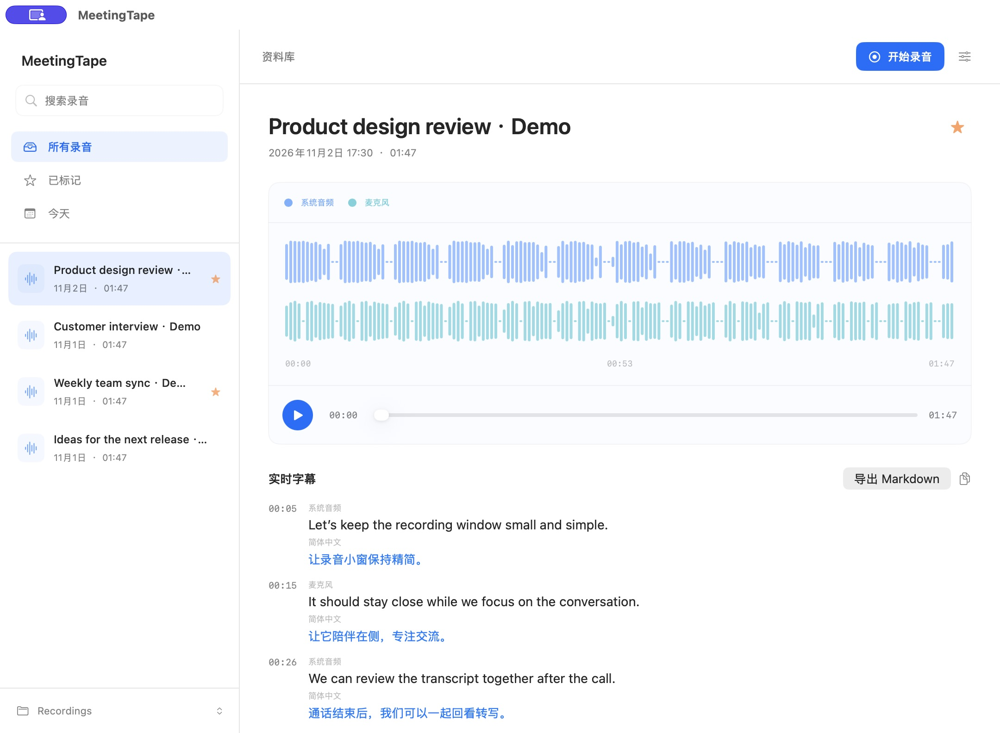
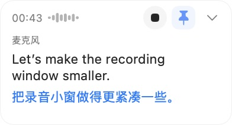
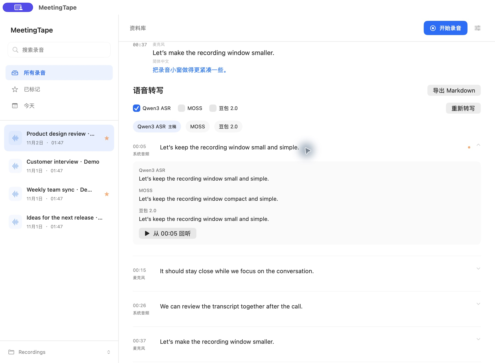

Stay present. Keep the conversation.
Your Mac meeting recorder. Capture the conversation, follow live captions, and keep audio and transcripts together.


Find the conversation again.
Search, rename, favorite, and play every recording from one quiet place. The context stays with the file, so you spend less time hunting and more time using what was said.
Turn the recording into a document you can share.
Read the transcript beside the audio and click any timestamp to hear that moment again. Compare versions made with local Qwen or MOSS models, or connect your Doubao key for cloud transcription. Export the versions you want as clean Markdown.

Download & Open
Download MeetingTape for Apple Silicon and grant standard macOS recording permissions.
Record
Start recording from the menu bar or library window whenever conversation begins.
Revisit & Export
Revisit audio in your library, compare transcription models, and export clean Markdown.